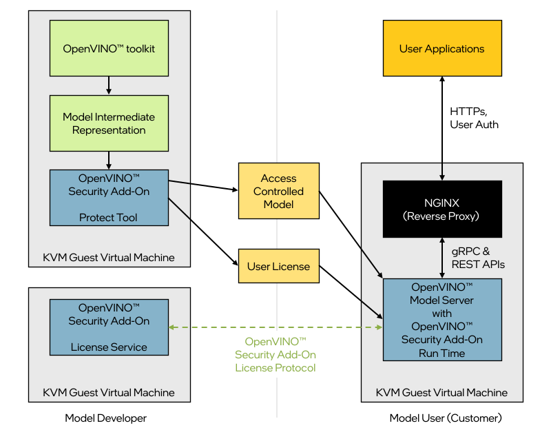

OpenVINO™ Security Add-on#
This guide provides instructions for people who use the OpenVINO™ Security Add-on to create, distribute, and use models that are created with the OpenVINO™ toolkit:
Model Developer: The Model Developer interacts with the Independent Software Vendor to control the User access to models. This document shows you how to setup hardware and virtual machines to use the OpenVINO™ Security Add-on to define access control to your OpenVINO™ models and then provide the access controlled models to the users.
Independent Software Vendor: Use this guide for instructions to use the OpenVINO™ Security Add-on to validate license for access controlled models that are provided to your customers (users).
User: This document includes instructions for end users who need to access and run access controlled models through the OpenVINO™ Security Add-on.
In this release, one person performs the role of both the Model Developer and the Independent Software Vendor. Therefore, this document provides instructions to configure one system for these two roles and one system for the User role. This document also provides a way for the same person to play the role of the Model Developer, Independent Software Vendor, and User to let you see how the OpenVINO™ Security Add-on functions from the User perspective.
Overview#
The OpenVINO™ Security Add-on works with the OpenVINO™ Model Server on Intel® architecture. Together, the OpenVINO™ Security Add-on and the OpenVINO™ Model Server provide a way for Model Developers and Independent Software Vendors to use secure packaging and secure model execution to enable access control to the OpenVINO™ models, and for model Users to run inference within assigned limits.
The OpenVINO™ Security Add-on consists of three components that run in Kernel-based Virtual Machines (KVMs). These components provide a way to run security-sensitive operations in an isolated environment. A brief description of the three components are as follows. Click each triangled line for more information about each.
OpenVINO™ Security Add-on Tool: As a Model Developer or Independent Software Vendor, you use the OpenVINO™ Security Add-on Tool (ovsatool) to generate a access controlled model and master license.
The Model Developer generates a access controlled model from the OpenVINO™ toolkit output. The access controlled model uses the model’s Intermediate Representation (IR) files to create a access controlled output file archive that are distributed to Model Users. The Developer can also put the archive file in long-term storage or back it up without additional security.
The Model Developer uses the OpenVINO™ Security Add-on Tool (ovsatool) to generate and manage cryptographic keys and related collateral for the access controlled models. Cryptographic material is only available in a virtual machine (VM) environment. The OpenVINO™ Security Add-on key management system lets the Model Developer to get external Certificate Authorities to generate certificates to add to a key-store.
The Model Developer generates user-specific licenses in a JSON format file for the access controlled model. The Model Developer can define global or user-specific licenses and attach licensing policies to the licenses. For example, the Model Developer can add a time limit for a model or limit the number of times a user can run a model.
OpenVINO™ Security Add-on License Service: Use the OpenVINO™ Security Add-on License Service to verify user parameters.
The Independent Software Vendor hosts the OpenVINO™ Security Add-on License Service, which responds to license validation requests when a user attempts to load a access controlled model in a model server. The licenses are registered with the OpenVINO™ Security Add-on License Service.
When a user loads the model, the OpenVINO™ Security Add-on Runtime contacts the License Service to make sure the license is valid and within the parameters that the Model Developer defined with the OpenVINO™ Security Add-on Tool (
ovsatool). The user must be able to reach the Independent Software Vendor’s License Service over the Internet.
OpenVINO™ Security Add-on Runtime: Users install and use the OpenVINO™ Security Add-on Runtime on a virtual machine.
Users host the OpenVINO™ Security Add-on Runtime component in a virtual machine.
Externally from the OpenVINO™ Security Add-on, the User adds the access controlled model to the OpenVINO™ Model Server config file. The OpenVINO™ Model Server attempts to load the model in memory. At this time, the OpenVINO™ Security Add-on Runtime component validates the user’s license for the access controlled model against information stored in the License Service provided by the Independent Software Vendor.
After the license is successfully validated, the OpenVINO™ Model Server loads the model and services the inference requests.
Where the OpenVINO™ Security Add-on Fits into Model Development and Deployment
The binding between SWTPM (vTPM used in guest VM) and HW TPM (TPM on the host) is explained in this document.
About the Installation#
The Model Developer, Independent Software Vendor, and User each must prepare one physical hardware machine and one Kernel-based Virtual Machine (KVM). In addition, each person must prepare a Guest Virtual Machine (Guest VM) for each role that person plays.
For example:
If one person acts as both the Model Developer and as the Independent Software Vendor, that person must prepare two Guest VMs. Both Guest VMs can be on the same physical hardware (Host Machine) and under the same KVM on that Host Machine.
If one person acts as all three roles, that person must prepare three Guest VMs. All three Guest VMs can be on the same Host Machine and under the same KVM on that Host Machine.
Purpose of Each Machine
Machine |
Purpose |
|---|---|
Host Machine Kernel-based Virtual Machine (KVM) Guest VM |
Physical hardware on which the KVM and Guest VM share set up. The OpenVINO™ Security Add-on runs in this virtual machine because it provides an isolated environment for security sensitive operations. The Model Developer uses the Guest VM to enable access control to the completed model. The Independent Software Provider uses the Guest VM to host the License Service. The User uses the Guest VM to contact the License Service and run the access controlled model. |
Prerequisites#
Hardware
Intel® Core™ or Xeon® processor
Operating system, firmware, and software
Ubuntu* Linux* 18.04 on the Host Machine.
TPM version 2.0-conformant Discrete Trusted Platform Module (dTPM) or Firmware Trusted Platform Module (fTPM)
Secure boot is enabled.
Other
The Independent Software Vendor must have access to a Certificate Authority (CA) that implements the Online Certificate Status Protocol (OCSP), supporting Elliptic Curve Cryptography (ECC) certificates for deployment.
The example in this document uses self-signed certificates.
How to Prepare a Host Machine#
This section is for the combined role of Model Developer and Independent Software Vendor, and the separate User role.
Step 1: Set up Packages on the Host Machine#
Begin this step on the Intel® Core™ or Xeon® processor machine that meets the prerequisites.
Note
As an alternative to manually following steps 1 - 11, you can run the script install_host_deps.sh in the Scripts/reference directory under the OpenVINO™ Security Add-on repository. The script stops with an error message if it identifies any issues. If the script halts due to an error, correct the issue that caused the error and restart the script. The script runs for several minutes and provides progress information.
Test for Trusted Platform Module (TPM) support:
dmesg | grep -i TPM
The output indicates TPM availability in the kernel boot logs. Look for presence of the following devices to indicate TPM support is available:
/dev/tpm0/dev/tpmrm0
If you do not see this information, your system does not meet the prerequisites to use the OpenVINO™ Security Add-on.
Make sure hardware virtualization support is enabled in the BIOS:
kvm-ok
The output should show:
INFO: /dev/kvm existsKVM acceleration can be usedIf your output is different, modify your BIOS settings to enable hardware virtualization.
If the
kvm-okcommand is not present, install it:sudo apt install -y cpu-checker
Install the Kernel-based Virtual Machine (KVM) and QEMU packages.
sudo apt install qemu qemu-kvm libvirt-bin bridge-utils virt-manager
Check the QEMU version:
qemu-system-x86_64 --versionIf the response indicates a QEMU version lower than 2.12.0 download, compile and install the latest QEMU version from QEMU website.
Build and install the libtpm package.
Build and install the swtpm package.
Add the
swtpmpackage to the$PATHenvironment variable.Install the software tool tpm2-tss . For installation information follow here.
Install the software tool tpm2-abmrd . For installation information follow here.
Install the tpm2-tools . For installation information follow here.
Install the Docker packages .
Note
Regardless of whether you used the
install_host_deps.shscript, complete step 12 to finish setting up the packages on the Host Machine.If you are running behind a proxy, set up a proxy for Docker.
The following are installed and ready to use: * Kernel-based Virtual Machine (KVM) * QEMU * SW-TPM * HW-TPM support * Docker
You’re ready to configure the Host Machine for networking.
Step 2: Set up Networking on the Host Machine#
This step is for the combined Model Developer and Independent Software Vendor roles. If Model User VM is running on different physical host, repeat the following steps for that host also.
In this step you prepare two network bridges:
A global IP address that a KVM can access across the Internet. This is the address that the OpenVINO™ Security Add-on runtime software on a user’s machine uses to verify they have a valid license.
A host-only local address to provide communication between the Guest VM and the QEMU host operating system.
This example in this step uses the following names. Your configuration might use different names:
50-cloud-init.yamlas an example configuration file name.eno1as an example network interface name.br0as an example bridge name.virbr0as an example bridge name.
Open the network configuration file for editing. This file is in
/etc/netplanwith a name like50-cloud-init.yamlLook for these lines in the file:
network: ethernets: eno1: dhcp4: true dhcp-identifier: mac version: 2
Change the existing lines and add the
br0network bridge. These changes enable external network access:network: ethernets: eno1: dhcp4: false bridges: br0: interfaces: [eno1] dhcp4: yes dhcp-identifier: mac version: 2
Save and close the network configuration file.
Run two commands to activate the updated network configuration file. If you use ssh, you might lose network connectivity when issuing these commands. If so, reconnect to the network.
sudo netplan generate
sudo netplan apply
A bridge is created and an IP address is assigned to the new bridge.
Verify the new bridge:
ip a | grep br0
The output looks similar to this and shows valid IP addresses:
4: br0:<BROADCAST,MULTICAST,UP,LOWER_UP> mtu 1500 qdisc noqueue state UP group default qlen 1000inet 123.123.123.123/<mask> brd 321.321.321.321 scope global dynamic br0
Create a script named
br0-qemu-ifupto bring up thebr0interface. Add the following script contents:#!/bin/sh nic=$1 if [ -f /etc/default/qemu-kvm ]; then . /etc/default/qemu-kvm fi switch=br0 ifconfig $nic 0.0.0.0 up brctl addif ${switch} $nic
Create a script named
br0-qemu-ifdownto bring down thebr0interface. Add the following script contents:#!/bin/sh nic=$1 if [ -f /etc/default/qemu-kvm ]; then . /etc/default/qemu-kvm fi switch=br0 brctl delif $switch $nic ifconfig $nic 0.0.0.0 down
Create a script named
virbr0-qemu-ifupto bring up thevirbr0interface. Add the following script contents:#!/bin/sh nic=$1 if [ -f /etc/default/qemu-kvm ]; then . /etc/default/qemu-kvm fi switch=virbr0 ifconfig $nic 0.0.0.0 up brctl addif ${switch} $nic
Create a script named
virbr0-qemu-ifdownto bring down thevirbr0interface. Add the following script contents:
#!/bin/sh nic=$1 if [ -f /etc/default/qemu-kvm ]; then . /etc/default/qemu-kvm fi switch=virbr0 brctl delif $switch $nic ifconfig $nic 0.0.0.0 down
See the QEMU documentation for more information about the QEMU network configuration.
Networking is set up on the Host Machine. Continue to the Step 3 to prepare a Guest VM for the combined role of Model Developer and Independent Software Vendor.
Step 3: Clone the OpenVINO™ Security Add-on#
Download the OpenVINO™ Security Add-on.
Step 4: Set Up one Guest VM for the combined roles of Model Developer and Independent Software Vendor#
For each separate role you play, you must prepare a virtual machine, called a Guest VM. Because in this release, the Model Developer and Independent Software Vendor roles are combined, these instructions guide you to set up one Guest VM, named ovsa_isv.
Begin these steps on the Host Machine.
As an option, you can use virsh and the virtual machine manager to create and bring up a Guest VM. See the libvirtd documentation for instructions if you’d like to do this.
Download the Server install ISO image for 64-bit PC (AMD64) computers of Ubuntu 18.04
Create an empty virtual disk image to serve as the Guest VM for your role as Model Developer and Independent Software Vendor:
sudo qemu-img create -f qcow2 <path>/ovsa_isv_dev_vm_disk.qcow2 20G
Install Ubuntu 18.04 on the Guest VM. Name the Guest VM
ovsa_isv:sudo qemu-system-x86_64 -m 8192 -enable-kvm \ -cpu host \ -drive if=virtio,file=<path-to-disk-image>/ovsa_isv_dev_vm_disk.qcow2,cache=none \ -cdrom <path-to-iso-image>/ubuntu-18.04.5-live-server-amd64.iso \ -device e1000,netdev=hostnet1,mac=52:54:00:d1:66:5f \ -netdev tap,id=hostnet1,script=<path-to-scripts>/virbr0-qemu-ifup,downscript=<path-to-scripts>/virbr0-qemu-ifdown \ -vnc :1
Connect a VNC client with
<host-ip-address>:1Follow the prompts on the screen to finish installing the Guest VM. Name the VM as
ovsa_isv_devShut down the Guest VM.
Restart the Guest VM after removing the option of cdrom image:
sudo qemu-system-x86_64 -m 8192 -enable-kvm \ -cpu host \ -drive if=virtio,file=<path-to-disk-image>/ovsa_isv_dev_vm_disk.qcow2,cache=none \ -device e1000,netdev=hostnet1,mac=52:54:00:d1:66:5f \ -netdev tap,id=hostnet1,script=<path-to-scripts>/virbr0-qemu-ifup,downscript=<path-to-scripts>/virbr0-qemu-ifdown \ -vnc :1
Choose ONE of these options to install additional required software:
- Option 1: Use a script to install additional software
Copy the script
install_guest_deps.shfrom theScripts/reference directoryof the OVSA repository to the Guest VMRun the script.
Shut down the Guest VM.
- Option 2Manually install additional software
1. Install the software tool tpm2-tss. For installation information follow here 2. Install the software tool tpm2-abmrd. For installation information follow here 3. Install the tpm2-tools. For installation information follow here 4. Install the Docker packages 5. Shut down the Guest VM.
On the host, create a directory to support the virtual TPM device and provision its certificates. Only
rootshould have read/write permission to this directory:sudo mkdir -p /var/OVSA/ sudo mkdir /var/OVSA/vtpm sudo mkdir /var/OVSA/vtpm/vtpm_isv_dev export XDG_CONFIG_HOME=~/.config /usr/share/swtpm/swtpm-create-user-config-files swtpm_setup --tpmstate /var/OVSA/vtpm/vtpm_isv_dev --create-ek-cert --create-platform-cert --overwrite --tpm2 --pcr-banks - .. note:: For steps 10 and 11, you can copy and edit the script named ``start_ovsa_isv_dev_vm.sh`` in the ``Scripts/reference`` directory in the OpenVINO™ Security Add-on repository instead of manually running the commands. If using the script, select the script with ``isv`` in the file name regardless of whether you are playing the role of the Model Developer or the role of the Independent Software Vendor. Edit the script to point to the correct directory locations and increment ``vnc`` for each Guest VM.
Start the vTPM on Host, write the HW TPM data into its NVRAM and restart the vTPM for QEMU:
sudo swtpm socket --tpm2 --server port=8280 \ --ctrl type=tcp,port=8281 \ --flags not-need-init --tpmstate dir=/var/OVSA/vtpm/vtpm_isv_dev & sudo tpm2_startup --clear -T swtpm:port=8280 sudo tpm2_startup -T swtpm:port=8280 python3 <path to Security-Addon source>/Scripts/host/OVSA_write_hwquote_swtpm_nvram.py 8280 sudo pkill -f vtpm_isv_dev swtpm socket --tpmstate dir=/var/OVSA/vtpm/vtpm_isv_dev \ --tpm2 \ --ctrl type=unixio,path=/var/OVSA/vtpm/vtpm_isv_dev/swtpm-sock \ --log level=20
Start the Guest VM:
sudo qemu-system-x86_64 \ -cpu host \ -enable-kvm \ -m 8192 \ -smp 8,sockets=1,cores=8,threads=1 \ -device e1000,netdev=hostnet0,mac=52:54:00:d1:66:6f \ -netdev tap,id=hostnet0,script=<path-to-scripts>/br0-qemu-ifup,downscript=<path-to-scripts>/br0-qemu-ifdown \ -device e1000,netdev=hostnet1,mac=52:54:00:d1:66:5f \ -netdev tap,id=hostnet1,script=<path-to-scripts>/virbr0-qemu-ifup,downscript=<path-to-scripts>/virbr0-qemu-ifdown \ -drive if=virtio,file=<path-to-disk-image>/ovsa_isv_dev_vm_disk.qcow2,cache=none \ -chardev socket,id=chrtpm,path=/var/OVSA/vtpm/vtpm_isv_dev/swtpm-sock \ -tpmdev emulator,id=tpm0,chardev=chrtpm \ -device tpm-tis,tpmdev=tpm0 \ -vnc :1Use the QEMU runtime options in the command to change the memory amount or CPU assigned to this Guest VM.
Use a VNC client to log on to the Guest VM at
<host-ip-address>:1
Step 5: Set Up one Guest VM for the User role#
Choose ONE of these options to create a Guest VM for the User role:
Option 1: Copy and Rename the ovsa_isv_dev_vm_disk.qcow2 disk image
Copy the
ovsa_isv_dev_vm_disk.qcow2disk image to a new image namedovsa_runtime_vm_disk.qcow2. You created theovsa_isv_dev_vm_disk.qcow2disk image in Step 4.Boot the new image.
Change the hostname from
ovsa_isv_devtoovsa_runtime.
sudo hostnamectl set-hostname ovsa_runtime
Replace all instances of
ovsa_isv_devtoovsa_runtimein the new image.
sudo nano /etc/hosts
Change the
/etc/machine-id:
sudo rm /etc/machine-id systemd-machine-id-setup
Shut down the Guest VM.
Option 2: Manually create the Guest VM
Create an empty virtual disk image:
sudo qemu-img create -f qcow2 <path>/ovsa_ovsa_runtime_vm_disk.qcow2 20G
Install Ubuntu 18.04 on the Guest VM. Name the Guest VM
ovsa_runtime:
sudo qemu-system-x86_64 -m 8192 -enable-kvm \ -cpu host \ -drive if=virtio,file=<path-to-disk-image>/ovsa_ovsa_runtime_vm_disk.qcow2,cache=none \ -cdrom <path-to-iso-image>/ubuntu-18.04.5-live-server-amd64.iso \ -device e1000,netdev=hostnet1,mac=52:54:00:d1:66:5f \ -netdev tap,id=hostnet1,script=<path-to-scripts>/virbr0-qemu-ifup, downscript=<path-to-scripts>/virbr0-qemu-ifdown \ -vnc :2
Connect a VNC client with
<host-ip-address>:2.Follow the prompts on the screen to finish installing the Guest VM. Name the Guest VM
ovsa_runtime.Shut down the Guest VM.
Restart the Guest VM:
sudo qemu-system-x86_64 -m 8192 -enable-kvm \ -cpu host \ -drive if=virtio,file=<path-to-disk-image>/ovsa_ovsa_runtime_vm_disk.qcow2,cache=none \ -device e1000,netdev=hostnet1,mac=52:54:00:d1:66:5f \ -netdev tap,id=hostnet1,script=<path-to-scripts>/virbr0-qemu-ifup, downscript=<path-to-scripts>/virbr0-qemu-ifdown \ -vnc :2
Choose ONE of these options to install additional required software:
Option 1: Use a script to install additional software 1. Copy the script
install_guest_deps.shfrom theScripts/referencedirectory of the OVSA repository to the Guest VM 2. Run the script. 3. Shut down the Guest VM.Option 2: Manually install additional software 1. Install the software tool tpm2-tss For installation information follow here 2. Install the software tool tpm2-abmrd For installation information follow here 3. Install the tpm2-tools For installation information follow here 4. Install the Docker packages 5. Shut down the Guest VM.
Create a directory to support the virtual TPM device and provision its certificates. Only
rootshould have read/write permission to this directory:sudo mkdir /var/OVSA/vtpm/vtpm_runtime export XDG_CONFIG_HOME=~/.config /usr/share/swtpm/swtpm-create-user-config-files swtpm_setup --tpmstate /var/OVSA/vtpm/vtpm_runtime --create-ek-cert --create-platform-cert --overwrite --tpm2 --pcr-banks - .. note:: For steps 3 and 4, you can copy and edit the script named ``start_ovsa_runtime_vm.sh`` in the ``Scripts/reference`` directory in the OpenVINO™ Security Add-on repository instead of manually running the commands. Edit the script to point to the correct directory locations and increment ``vnc`` for each Guest VM. This means that if you are creating a third Guest VM on the same Host Machine, change ``-vnc :2`` to ``-vnc :3``
Start the vTPM, write the HW TPM data into its NVRAM and restart the vTPM for QEMU:
sudo swtpm socket --tpm2 --server port=8380 \ --ctrl type=tcp,port=8381 \ --flags not-need-init --tpmstate dir=/var/OVSA/vtpm/vtpm_runtime & sudo tpm2_startup --clear -T swtpm:port=8380 sudo tpm2_startup -T swtpm:port=8380 python3 <path to Security-Addon source>/Scripts/host/OVSA_write_hwquote_swtpm_nvram.py 8380 sudo pkill -f vtpm_runtime swtpm socket --tpmstate dir=/var/OVSA/vtpm/vtpm_runtime \ --tpm2 \ --ctrl type=unixio,path=/var/OVSA/vtpm/vtpm_runtime/swtpm-sock \ --log level=20
Start the Guest VM in a new terminal:
sudo qemu-system-x86_64 \ -cpu host \ -enable-kvm \ -m 8192 \ -smp 8,sockets=1,cores=8,threads=1 \ -device e1000,netdev=hostnet2,mac=52:54:00:d1:67:6f \ -netdev tap,id=hostnet2,script=<path-to-scripts>/br0-qemu-ifup,downscript=<path-to-scripts>/br0-qemu-ifdown \ -device e1000,netdev=hostnet3,mac=52:54:00:d1:67:5f \ -netdev tap,id=hostnet3,script=<path-to-scripts>/virbr0-qemu-ifup,downscript=<path-to-scripts>/virbr0-qemu-ifdown \ -drive if=virtio,file=<path-to-disk-image>/ovsa_runtime_vm_disk.qcow2,cache=none \ -chardev socket,id=chrtpm,path=/var/OVSA/vtpm/vtpm_runtime/swtpm-sock \ -tpmdev emulator,id=tpm0,chardev=chrtpm \ -device tpm-tis,tpmdev=tpm0 \ -vnc :2
Use the QEMU runtime options in the command to change the memory amount or CPU assigned to this Guest VM.
Use a VNC client to log on to the Guest VM at
<host-ip-address>:<x>where<x>corresponds to the vnc number in thestart_ovsa_isv_vm.shor in step 8.
How to Build and Install the OpenVINO™ Security Add-on Software#
Follow the below steps to build and Install OpenVINO™ Security Add-on on host and different VMs.
Step 1: Build the OpenVINO™ Model Server image#
Building OpenVINO™ Security Add-on depends on OpenVINO™ Model Server docker containers. Download and build OpenVINO™ Model Server first on the host.
Download the OpenVINO™ Model Server software
Build the OpenVINO™ Model Server Docker images
git clone https://github.com/openvinotoolkit/model_server.git cd model_server make docker_build
Step 2: Build the software required for all roles#
This step is for the combined role of Model Developer and Independent Software Vendor, and the User
Go to the top-level OpenVINO™ Security Add-on source directory cloned earlier.
cd security_addon
Build the OpenVINO™ Security Add-on:
make clean all sudo -s make package ``` The following packages are created under the ``release_files`` directory: - ``ovsa-kvm-host.tar.gz``: Host Machine file - ``ovsa-developer.tar.gz``: For the Model Developer and the Independent Software Developer - ``ovsa-model-hosting.tar.gz``: For the User
Step 3: Install the host software#
This step is for the combined role of Model Developer and Independent Software Vendor, and the User.
Go to the
release_filesdirectory:cd release_files
Set up the path:
export OVSA_RELEASE_PATH=$PWD
Install the OpenVINO™ Security Add-on Software on the Host Machine:
cd $OVSA_RELEASE_PATH tar xvfz ovsa-kvm-host.tar.gz cd ovsa-kvm-host ./install.sh
If you are using more than one Host Machine repeat Step 3 on each.
Step 4: Install the OpenVINO™ Security Add-on Model Developer / ISV Components#
This step is for the combined role of Model Developer and Independent Software Vendor. References to the Guest VM are to ovsa_isv_dev.
Log on to the Guest VM as
<user>.Create the OpenVINO™ Security Add-on directory in the home directory
mkdir -p ~/OVSA
Go to the Host Machine, outside of the Guest VM.
Copy
ovsa-developer.tar.gzfromrelease_filesto the Guest VM:cd $OVSA_RELEASE_PATH scp ovsa-developer.tar.gz username@<isv-developer-vm-ip-address>:/<username-home-directory>/OVSA
Go to the Guest VM.
Create
ovsausersudo useradd -m ovsa sudo passwd ovsa
Install the software to the Guest VM:
cd ~/OVSA tar xvfz ovsa-developer.tar.gz cd ovsa-developer sudo ./install.sh
Start the license server on a separate terminal as
ovsauser.source /opt/ovsa/scripts/setupvars.sh cd /opt/ovsa/bin ./license_server
Note
If you are behind a firewall, check and set your proxy settings to ensure the license server is able to validate the certificates.
Step 5: Install the OpenVINO™ Security Add-on Model Hosting Component#
This step is for the User. References to the Guest VM are to ovsa_runtime.
The Model Hosting components install the OpenVINO™ Security Add-on Runtime Docker container based on OpenVINO™ Model Server NGINX Docker to host a access controlled model.
Log on to the Guest VM as
<user>.Create the OpenVINO™ Security Add-on directory in the home directory
mkdir -p ~/OVSA
While on the Host Machine copy the ovsa-model-hosting.tar.gz from release_files to the Guest VM:
cd $OVSA_RELEASE_PATH scp ovsa-model-hosting.tar.gz username@<runtime-vm-ip-address>:/<username-home-directory>/OVSA
Go to the Guest VM.
Create
ovsausersudo useradd -m ovsa sudo passwd ovsa sudo usermod -aG docker ovsa
Install the software to the Guest VM:
cd ~/OVSA tar xvfz ovsa-model-hosting.tar.gz cd ovsa-model-hosting sudo ./install.sh
How to Use the OpenVINO™ Security Add-on#
This section requires interactions between the Model Developer/Independent Software vendor and the User. All roles must complete all applicable set up steps and installation steps before beginning this section.
This document uses the face-detection-retail-0004 model as an example.
The following figure describes the interactions between the Model Developer, Independent Software Vendor, and User.
Tip
The Model Developer/Independent Software Vendor and User roles are related to virtual machine use and one person might fill the tasks required by multiple roles. In this document the tasks of Model Developer and Independent Software Vendor are combined and use the Guest VM named ovsa_isv. It is possible to have all roles set up on the same Host Machine.
Model Developer Instructions#
The Model Developer creates model, defines access control and creates the user license. After the model is created, access control enabled, and the license is ready, the Model Developer provides the license details to the Independent Software Vendor before sharing to the Model User.
References to the Guest VM are to ovsa_isv_dev. Log on to the Guest VM as ovsa user.
Step 1: Set up the artefacts directory#
Create a directory named artefacts. This directory will hold artefacts required to create licenses:
mkdir -p ~/OVSA/artefacts
cd ~/OVSA/artefacts
export OVSA_DEV_ARTEFACTS=$PWD
source /opt/ovsa/scripts/setupvars.sh
Step 2: Create a key store and add a certificate to it#
1. Create files to request a certificate: This example uses a self-signed certificate for demonstration purposes. In a production environment, use CSR files to request for a CA-signed certificate.
cd $OVSA_DEV_ARTEFACTS /opt/ovsa/bin/ovsatool keygen -storekey -t ECDSA -n Intel -k isv_keystore -r isv_keystore.csr -e "/C=IN/CN=localhost"Below two files are created along with the keystore file: -
isv_keystore.csr- A Certificate Signing Request (CSR) -isv_keystore.csr.crt- A self-signed certificateIn a production environment, send
isv_keystore.csrto a CA to request a CA-signed certificate.
Add the certificate to the key store
/opt/ovsa/bin/ovsatool keygen -storecert -c isv_keystore.csr.crt -k isv_keystore
Step 3: Create the model#
This example uses curl to download the face-detection-retail-004 model from the OpenVINO Model Zoo. If you are behind a firewall, check and set your proxy settings.
Download a model from the Model Zoo:
curl --create-dirs https://download.01.org/opencv/2021/openvinotoolkit/2021.1/open_../legacy-features/model-zoo/models_bin/1/face-detection-retail-0004/FP32/face-detection-retail-0004.xml https://download.01.org/opencv/2021/openvinotoolkit/2021.1/open_../legacy-features/model-zoo/models_bin/1/face-detection-retail-0004/FP32/face-detection-retail-0004.bin -o model/face-detection-retail-0004.xml -o model/face-detection-retail-0004.bin
The model is downloaded to the OVSA_DEV_ARTEFACTS/model directory
Step 4: Define access control for the model and create a master license for it#
Define and enable the model access control and master license:
uuid=$(uuidgen)
/opt/ovsa/bin/ovsatool controlAccess -i model/face-detection-retail-0004.xml model/face-detection-retail-0004.bin -n "face detection" -d "face detection retail" -v 0004 -p face_detection_model.dat -m face_detection_model.masterlic -k isv_keystore -g $uuid
The Intermediate Representation files for the face-detection-retail-0004 model are encrypted as face_detection_model.dat and a master license is generated as face_detection_model.masterlic
Step 5: Create a Runtime Reference TCB#
Use the runtime reference TCB to create a customer license for the access controlled model and the specific runtime.
Generate the reference TCB for the runtime
/opt/ovsa/bin/ovsaruntime gen-tcb-signature -n "Face Detect @ Runtime VM" -v "1.0" -f face_detect_runtime_vm.tcb -k isv_keystore
Step 6: Publish the access controlled Model and Runtime Reference TCB#
The access controlled model is ready to be shared with the User and the reference TCB is ready to perform license checks.
Step 7: Receive a User Request#
Obtain artefacts from the User who needs access to a access controlled model:
Customer certificate from the customer’s key store.
Other information that apply to your licensing practices, such as the length of time the user needs access to the model
Create a customer license configuration
cd $OVSA_DEV_ARTEFACTS /opt/ovsa/bin/ovsatool licgen -t TimeLimit -l30 -n "Time Limit License Config" -v 1.0 -u "<isv-developer-vm-ip-address>:<license_server-port>" /opt/ovsa/certs/server.crt -k isv_keystore -o 30daylicense.config .. note:: The parameter /opt/ovsa/certs/server.crt contains the certificate used by the License Server. The server certificate will be added to the customer license and validated during use. Refer to `OpenVINO™ Security Add-on License Server Certificate Pinning <https://github.com/openvinotoolkit/security_addon/blob/master/docs/ovsa_license_server_cert_pinning.md>`__
Create the customer license
cd $OVSA_DEV_ARTEFACTS /opt/ovsa/bin/ovsatool sale -m face_detection_model.masterlic -k isv_keystore -l 30daylicense.config -t face_detect_runtime_vm.tcb -p custkeystore.csr.crt -c face_detection_model.lic
Update the license server database with the license.
cd /opt/ovsa/DB python3 ovsa_store_customer_lic_cert_db.py ovsa.db $OVSA_DEV_ARTEFACTS/face_detection_model.lic $OVSA_DEV_ARTEFACTS/custkeystore.csr.crt
Provide these files to the User:
face_detection_model.datface_detection_model.lic
Model User Instructions#
References to the Guest VM are to ovsa_rumtime. Log on to the Guest VM as ovsa user.
Step 1: Setup up the artefacts directory#
Create a directory named artefacts. This directory will hold artefacts required to create licenses:
mkdir -p ~/OVSA/artefacts cd ~/OVSA/artefacts export OVSA_RUNTIME_ARTEFACTS=$PWD source /opt/ovsa/scripts/setupvars.sh
Step 2: Add a CA-Signed Certificate to a Key Store#
Generate a Customer key store file:
cd $OVSA_RUNTIME_ARTEFACTS /opt/ovsa/bin/ovsatool keygen -storekey -t ECDSA -n Intel -k custkeystore -r custkeystore.csr -e "/C=IN/CN=localhost"
Below two files are created along with the keystore file: *
custkeystore.csr- A Certificate Signing Request (CSR) *custkeystore.csr.crt`- A self-signed certificate
Send
custkeystore.csrto the CA to request a CA-signed certificate.Add the certificate to the key store:
/opt/ovsa/bin/ovsatool keygen -storecert -c custkeystore.csr.crt -k custkeystore
Step 3: Request an access controlled Model from the Model Developer#
This example uses scp to share data between the ovsa_runtime and ovsa_dev Guest VMs on the same Host Machine.
Communicate your need for a model to the Model Developer. The Developer will ask you to provide the certificate from your key store and other information. This example uses the length of time the model needs to be available.
The model user’s certificate needs to be provided to the Developer:
cd $OVSA_RUNTIME_ARTEFACTS scp custkeystore.csr.crt username@<developer-vm-ip-address>:/<username-home-directory>/OVSA/artefacts
Step 4: Receive and load the access controlled model into the OpenVINO™ Model Server#
Receive the model as files named:
face_detection_model.dat
face_detection_model.lic
cd $OVSA_RUNTIME_ARTEFACTS scp username@<developer-vm-ip-address>:/<username-home-directory>/OVSA/artefacts/face_detection_model.dat . scp username@<developer-vm-ip-address>:/<username-home-directory>/OVSA/artefacts/face_detection_model.lic .
Prepare the environment:
cd $OVSA_RUNTIME_ARTEFACTS/.. cp /opt/ovsa/example_runtime ovms -r cd ovms mkdir -vp model/fd/1
The
$OVSA_RUNTIME_ARTEFACTS/../ovmsdirectory contains scripts and a sample configuration JSON file to start the model server.Copy the artefacts from the Model Developer:
cd $OVSA_RUNTIME_ARTEFACTS/../ovms cp $OVSA_RUNTIME_ARTEFACTS/face_detection_model.dat model/fd/1/. cp $OVSA_RUNTIME_ARTEFACTS/face_detection_model.lic model/fd/1/. cp $OVSA_RUNTIME_ARTEFACTS/custkeystore model/fd/1/.
Rename and edit
sample.jsonto include the names of the access controlled model artefacts you received from the Model Developer. The file looks like this:{ "custom_loader_config_list":[ { "config":{ "loader_name":"ovsa", "library_path": "/ovsa-runtime/lib/libovsaruntime.so" } } ], "model_config_list":[ { "config":{ "name":"controlled-access-model", "base_path":"/sampleloader/model/fd", "custom_loader_options": {"loader_name": "ovsa", "keystore": "custkeystore", "controlled_access_file": "face_detection_model"} } } ] }
Step 5: Start the NGINX Model Server#
The NGINX Model Server publishes the access controlled model.
./start_secure_ovsa_model_server.sh
For information about the NGINX interface follow here.
Step 6: Prepare to run Inference#
Log on to the Guest VM from another terminal.
Install the Python dependencies for your set up. For example:
sudo apt install pip3 pip3 install cmake pip3 install scikit-build pip3 install opencv-python pip3 install futures==3.1.1 pip3 install tensorflow-serving-api==1.14.0
Copy the
face_detection.pyfrom the example_client in/opt/ovsa/example_clientcd ~/OVSA/ovms cp /opt/ovsa/example_client/* .
Copy the sample images for inferencing. An image directory is created that includes a sample image for inferencing.
curl --create-dirs https://raw.githubusercontent.com/openvinotoolkit/model_server/master/example_client/images/people/people1.jpeg -o images/people1.jpeg
Step 7: Run Inference#
Run the face_detection.py script:
python3 face_detection.py --grpc_port 3335 --batch_size 1 --width 300 --height 300 --input_images_dir images --output_dir results --tls --server_cert /var/OVSA/Modelserver/server.pem --client_cert /var/OVSA/Modelserver/client.pem --client_key /var/OVSA/Modelserver/client.key --model_name controlled-access-model
Summary#
You have completed these tasks: - Set up one or more computers (Host Machines) with one KVM per machine and one or more virtual machines (Guest VMs) on the Host Machines - Installed the OpenVINO™ Security Add-on - Used the OpenVINO™ Model Server to work with OpenVINO™ Security Add-on - As a Model Developer or Independent Software Vendor, you access controlled a model and prepared a license for it. - As a Model Developer or Independent Software Vendor, you prepared and ran a License Server and used the License Server to verify a User had a valid license to use a access controlled model. - As a User, you provided information to a Model Developer or Independent Software Vendor to get a access controlled model and the license for the model. - As a User, you set up and launched a Host Server on which you can run licensed and access controlled models. - As a User, you loaded a access controlled model, validated the license for the model, and used the model to run inference.
References#
Use these links for more information: - OpenVINO toolkit - OpenVINO Model Server Quick Start Guide - Model repository